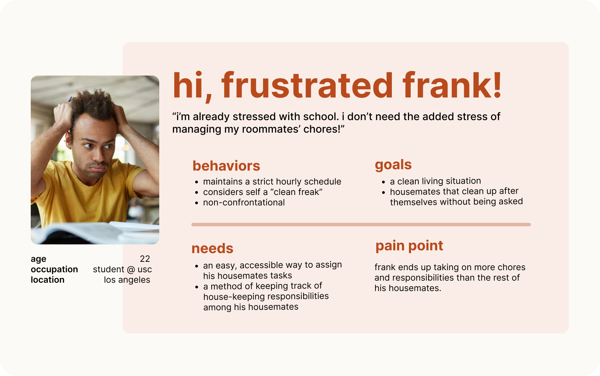

“I dont think it’s fair right now because not everyone is contributing with chores”
“I wish I had a set schedule of when to do chores rather than doing it whenever”
“I am a non confrontational person. It bothers me, but I rather do the chores rather than make it a big deal”
“I am very grateful that my roommates does most of chores, I do like 10%”
“I don’t think my roommate minds doing the chores”
“I tend to forget to pick up after myself, I do feel bad that my housemate usually cleans up after me."

Walking in Frank's shoes
Frank is a USC student living in an off-campus apartment with 3 of his best friends. Frank realizes that his living style is different from his friends’ and is tired of reminding his friends to clean up after themselves. He's resorted to doing all the chores himself to avoid escalating the situation. Frank needs a way to effectively communicate what chores should be done while ensuring that his roommates are held accountable for their share of work.
Walking in Lucy's shoes
Lucy, a sophomore at NYU, is living with her friends in off-campus housing. This is her first time living alone so she does her best to remember her responsibilities, but often forgets to clean up after herself due to her busy schedule. As a result, she’s noticed that she’s grown distant from her housemates and they seem to regularly be upset with her. Lucy needs a better technique to remember what chores to complete, and thus maintain peace among her household.